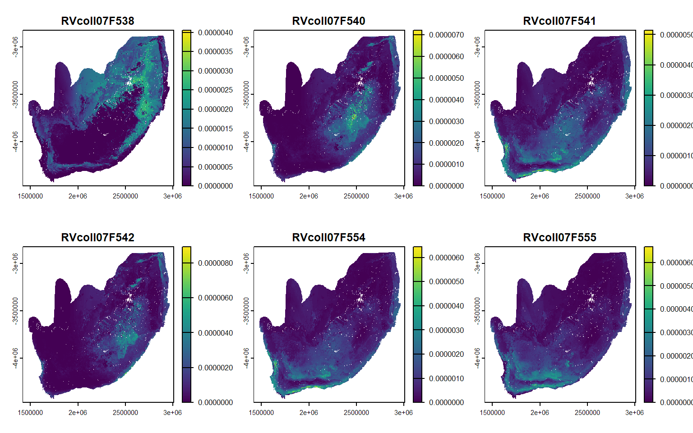
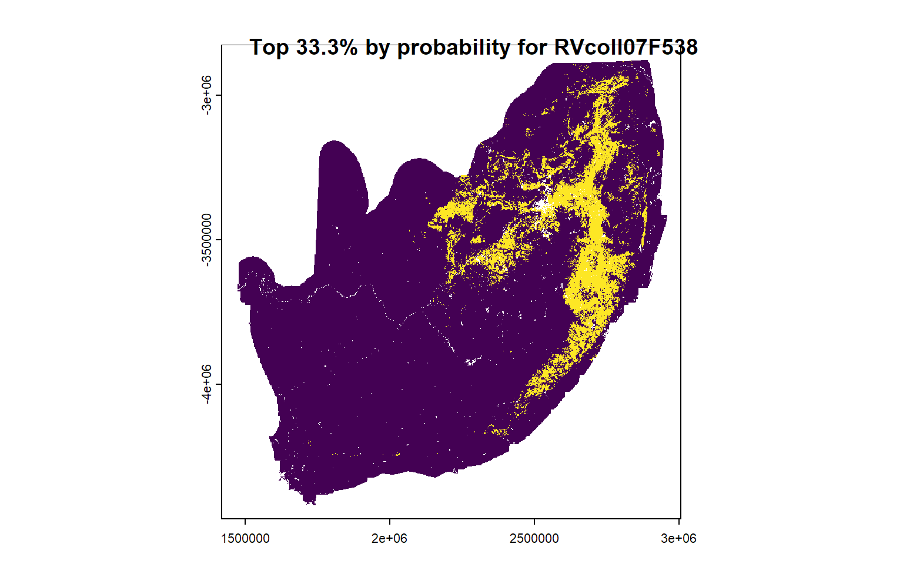
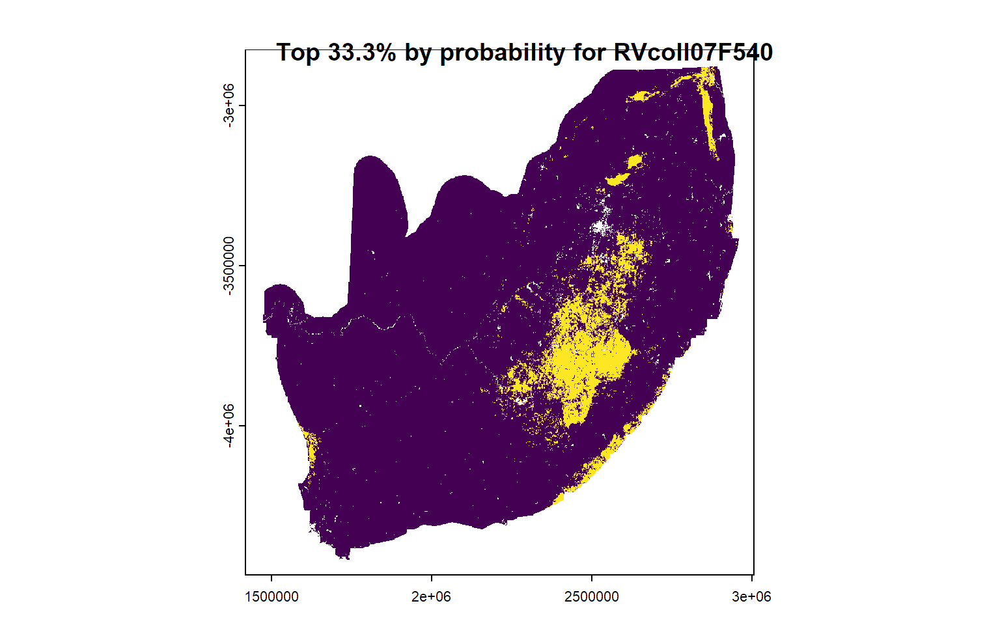
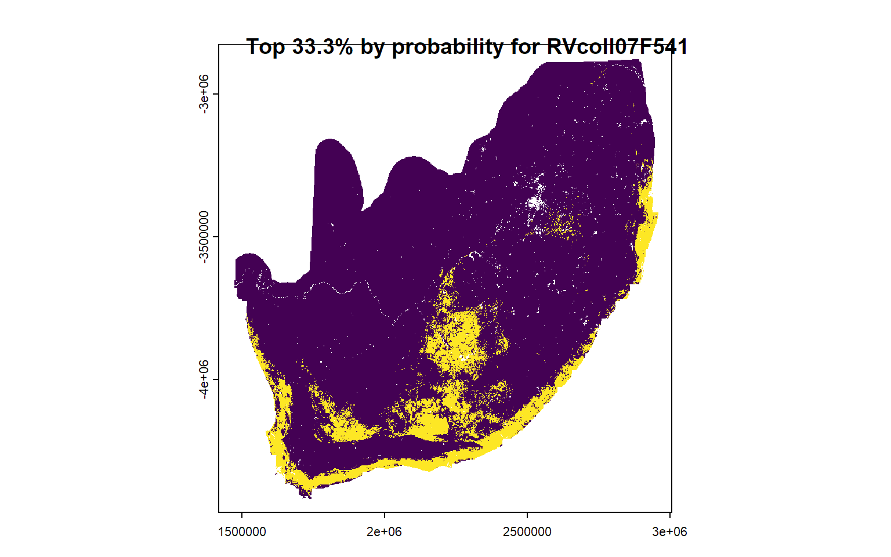
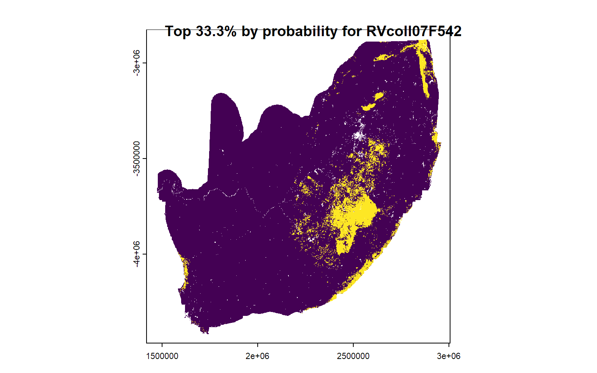
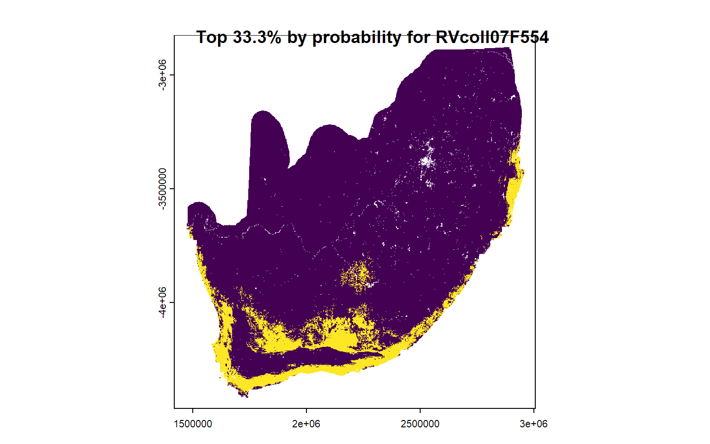
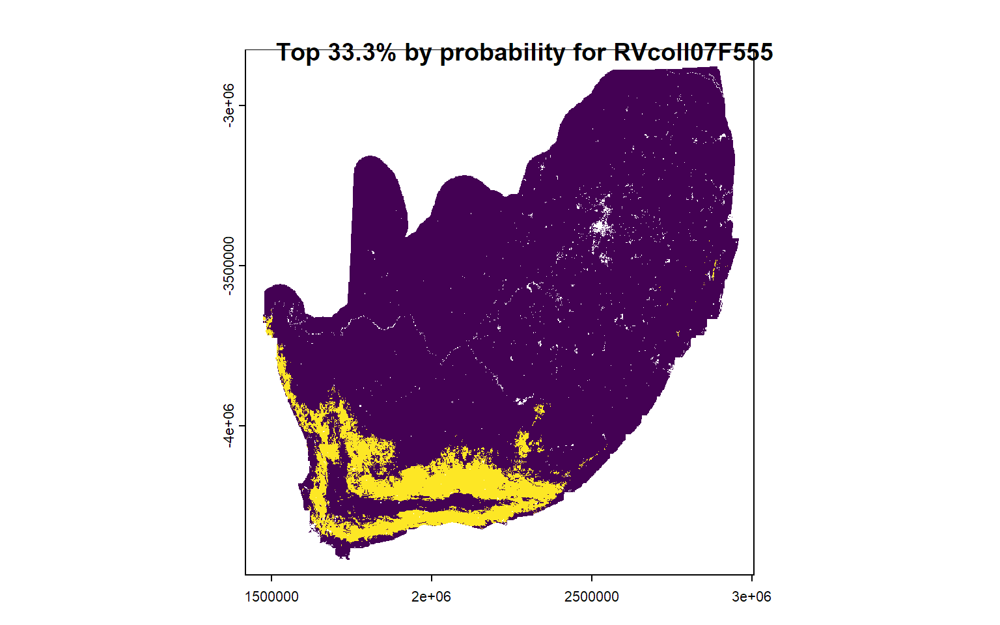
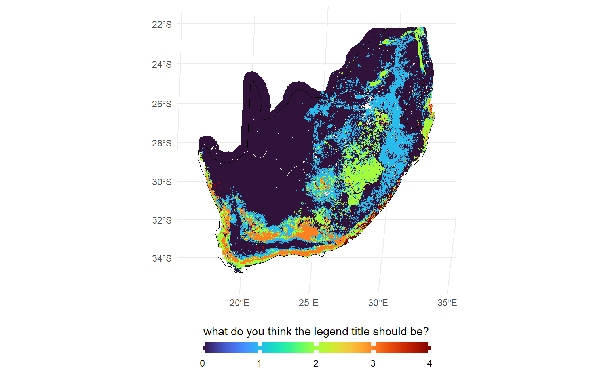
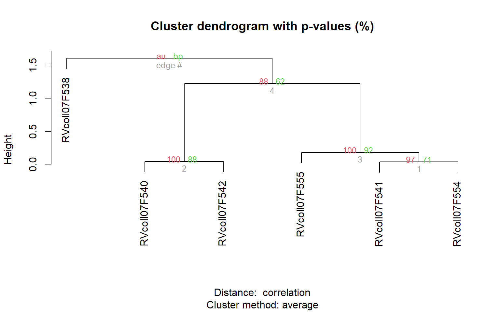
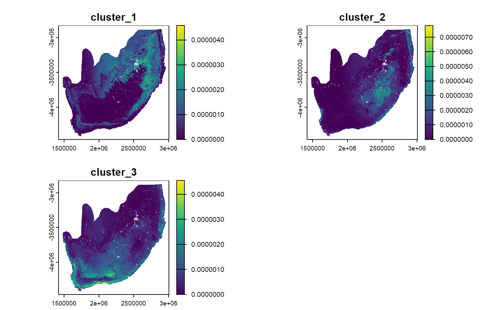

3. Summarizing outputs
Summarize posterior probability surfaces
Overview
Your isoscapes are optimized and your study species/material are confidently assigned to origin, but now you’re left with all these posterior probability surfaces! Let’s explore some ways you can interpret and summarize your results.
Setting up
unknown <- read.csv("Module3_assignment/unknown.csv")
Sr_iso_mean <- rast("Module3_assignment/rf_all_pred.tif")
Sr_iso_sd <- rast("Module3_assignment/rf_all_sd.tif")
Sr_iso <- c(Sr_iso_mean, Sr_iso_sd)
d2Hw_isoscape <- terra::rast("Module3_assignment/d2Hw_isoscape.tif")
ENM_Sept <- terra::rast("Module3_assignment/ENM_Sept.tif")
iso_vals <- values(d2Hw_isoscape[[1]], na.rm = TRUE)
iso_range <- range(iso_vals)
unknown_dual <- unknown %>%
mutate(in_range = d2H >= iso_range[1] & d2H <= iso_range[2]) %>%
filter(in_range == T) %>%
filter(Sample_ID != "RVcoll14B025") %>%
dplyr::select(Sample_ID, Sr8786, d2H)
dual_isoscapes <- isoStack(Sr_iso, d2Hw_isoscape)
prior_probsurfaces <- pdRaster(r = dual_isoscapes, unknown = unknown_dual, prior = ENM_Sept)
NULLeck <- crs(Sr_iso_mean)
WGS84 <- '+init=EPSG:4326'
sa <- ext(c(16.5, 35, -36, -22)) #(xmin, xmax, ymin, ymax
SA_outline <- rnaturalearth::ne_countries(
country = c("South Africa", "Lesotho", "Eswatini"),returnclass = "sf") %>%
sf::st_as_sf(., crs=WGS84) %>%
st_crop(sa) %>%
sf::st_transform(crs=eck)
unknown_dualxy<-unknown %>%
mutate(in_range = d2H >= iso_range[1] & d2H <= iso_range[2]) %>%
filter(in_range == T) %>%
filter(Sample_ID != "RVcoll14B025") %>%
st_as_sf(., coords=c("Lon","Lat"), crs=WGS84)%>%
st_transform(crs=eck)Stacked maps
One classic way we could choose to deal with the large amount of information contained in a probability surface is to make the surface binary: areas of “low” and “high” probability.
prior_binary <- assignR::qtlRaster(pdR = prior_probsurfaces, threshold = 0.333, thresholdType = "prob")





It’s become traditional to use a 2:1 odds ratio, but you can explore and optimize the odds ratio used (check out the assignR:QA function for inspiration)
map it!
A stacked map is the sum of the binary surfaces.
prior_stacked <- sum(prior_binary)
ggplot()+
geom_spatraster(data=prior_stacked)+ # stacked map
geom_spatvector(data=SA_outline,fill=NA,colour="black")+ # country outline
geom_sf(data=unknown_dualxy,pch=1, col="red3",cex=2.5)+ # butterfly collection sites
scale_fill_viridis(option="turbo", na.value = NA)+ #pretty colors
theme_minimal()+
theme(legend.position="bottom")+
theme(legend.key.width=unit(2, "cm"))+
guides(fill = guide_colourbar(direction = 'horizontal', ##transform legend
title= "what do you think the legend title should be?", ##rename default legend
title.position='top',
title.hjust=0.5,
ticks.colour='#f5f5f2',
ticks.linewidth=2,
barwidth = 15,
barheight = 0.75)) 
Cluster analysis
For single isotope analyses, clustering with k-means etc works well. However, once you move to combining multiple geolocation tools, you may want to compare the spatial patterns of the probability surfaces directly.
Spatial similarity with isocat
The package isocat has been specifically designed for this purpose! Let’s check it out!
#Applies pairwise comparisons of Schoener's D-metric between each layer in a spatraster to populate a similarity matrix.
prior_simmatrix <- isocat::surfaceSimilarityMatrix(prior_probsurfaces)
prior_simmatrix RVcoll07F538 RVcoll07F540 RVcoll07F541 RVcoll07F542 RVcoll07F554
RVcoll07F538 1.0000000 0.3176013 0.2803937 0.3653906 0.2696932
RVcoll07F540 0.3176013 1.0000000 0.5974350 0.8910694 0.5254899
RVcoll07F541 0.2803937 0.5974350 1.0000000 0.5535833 0.9112226
RVcoll07F542 0.3653906 0.8910694 0.5535833 1.0000000 0.4911790
RVcoll07F554 0.2696932 0.5254899 0.9112226 0.4911790 1.0000000
RVcoll07F555 0.2772339 0.4013909 0.7444744 0.3755019 0.8053080
RVcoll07F555
RVcoll07F538 0.2772339
RVcoll07F540 0.4013909
RVcoll07F541 0.7444744
RVcoll07F542 0.3755019
RVcoll07F554 0.8053080
RVcoll07F555 1.0000000# wrapper for pvclust that applies hierarchical clustering analysis to similarity matrix
prior_cS <- isocat::clusterSimmatrix(simmatrix = prior_simmatrix)Bootstrap (r = 0.67)... Done.
Bootstrap (r = 0.83)... Done.
Bootstrap (r = 1.0)... Done.
Bootstrap (r = 1.17)... Done.
Bootstrap (r = 1.33)... Done.plot(prior_cS)
#choose a cutoff value
myheight <- 0.5
unknown_dual$cluster <- dendextend::cutree(prior_cS$hclust, h = myheight)
unknown_dualFor each cluster, you could make stacked maps or a map of the average probability
# summary maps of each cluster
prior_meanSurfaces <- meanAggregateClusterProbability(indivIDs = unknown_dual$Sample_ID,
clusters = unknown_dual$cluster,
surfaces = prior_probsurfaces,
nClust = FALSE)
plot(prior_meanSurfaces) 
Summary
- Interpreting probability surfaces confidently requires an in-depth understanding of
- the strengths and weaknesses of the underlying isoscapes
- the assumptions of the probability density function
- the ecology of your species
Thank you so much for your attention; I hope you learned something new!
For comments, questions, or just to say hi, email Megan Reich at meganreich13@gmail.com
R version 4.5.1 (2025-06-13 ucrt)
Platform: x86_64-w64-mingw32/x64
Running under: Windows 11 x64 (build 26200)
Matrix products: default
LAPACK version 3.12.1
locale:
[1] LC_COLLATE=English_Canada.utf8 LC_CTYPE=English_Canada.utf8
[3] LC_MONETARY=English_Canada.utf8 LC_NUMERIC=C
[5] LC_TIME=English_Canada.utf8
time zone: Australia/Sydney
tzcode source: internal
attached base packages:
[1] stats graphics grDevices utils datasets methods base
other attached packages:
[1] isocat_1.0.1 viridis_0.6.5 viridisLite_0.4.2
[4] tidyterra_0.7.2 sf_1.0-21 rnaturalearth_1.1.0
[7] terra_1.8-70 assignR_2.4.3.9000 lubridate_1.9.4
[10] forcats_1.0.1 stringr_1.5.2 dplyr_1.1.4
[13] purrr_1.1.0 readr_2.1.5 tidyr_1.3.1
[16] tibble_3.3.0 ggplot2_4.0.0 tidyverse_2.0.0
loaded via a namespace (and not attached):
[1] gtable_0.3.6 xfun_0.53 htmlwidgets_1.6.4 lattice_0.22-7
[5] tzdb_0.5.0 vctrs_0.6.5 tools_4.5.1 generics_0.1.4
[9] proxy_0.4-27 pkgconfig_2.0.3 KernSmooth_2.23-26 data.table_1.17.8
[13] RColorBrewer_1.1-3 S7_0.2.0 lifecycle_1.0.5 compiler_4.5.1
[17] farver_2.1.2 codetools_0.2-20 htmltools_0.5.8.1 class_7.3-23
[21] yaml_2.3.10 pillar_1.11.1 classInt_0.4-11 wk_0.9.4
[25] iterators_1.0.14 foreach_1.5.2 tidyselect_1.2.1 digest_0.6.37
[29] stringi_1.8.7 labeling_0.4.3 pvclust_2.2-0 fastmap_1.2.0
[33] grid_4.5.1 cli_3.6.5 magrittr_2.0.4 e1071_1.7-16
[37] withr_3.0.2 scales_1.4.0 sp_2.2-0 timechange_0.3.0
[41] rmarkdown_2.30 gridExtra_2.3 hms_1.1.4 mvnfast_0.2.8
[45] evaluate_1.0.5 knitr_1.50 s2_1.1.9 rlang_1.1.6
[49] dendextend_1.19.1 Rcpp_1.1.0 glue_1.8.0 geosphere_1.5-20
[53] DBI_1.2.3 rstudioapi_0.19.0 jsonlite_2.0.0 R6_2.6.1
[57] units_1.0-0